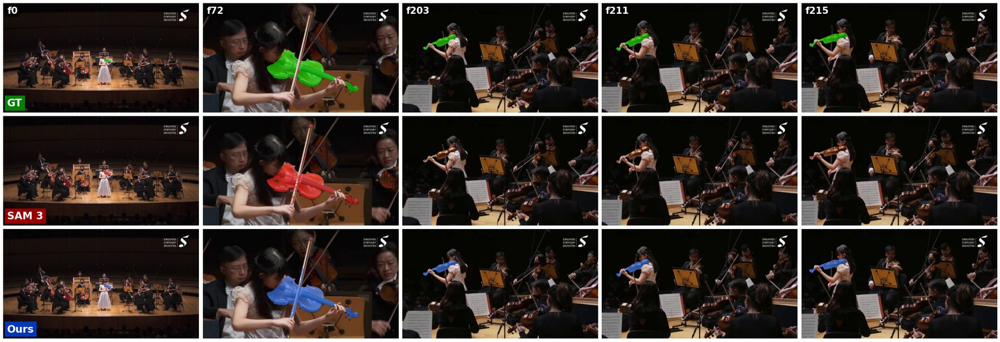
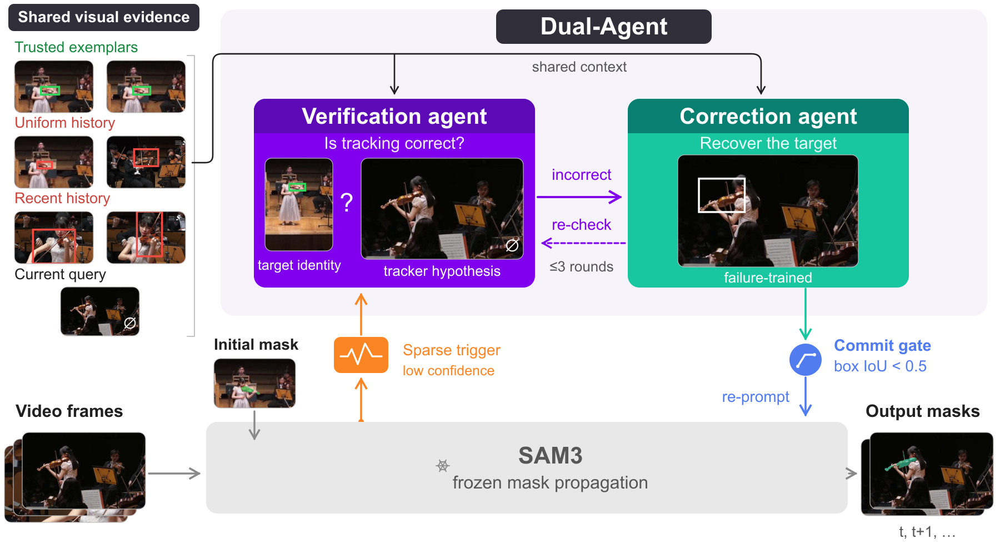

The memory that makes SAM 3 strong is also why it fails. Dual-Agent adds a failure-aware layer that detects when tracking goes wrong and recovers the target.
Recent trackers improve propagation with better memory, motion cues or distractor-aware memory, yet all still trust their last prediction. One wrong mask in memory, and every later frame inherits it. Nothing in the loop notices, so nothing undoes it.

Rows: ground truth, SAM 3, Dual-Agent. SAM 3 loses the violinist for good; Dual-Agent gets her back.
Dual-Agent adds a failure-aware layer above a frozen SAM 3. A verifier checks, from the tracker's own history, whether the track is still right; a corrector re-localizes the target when it is not. A committed correction re-prompts SAM 3 from a clean memory.

Sparse triggers call the verifier. An incorrect verdict calls the corrector. A commit gate decides whether the fix reaches SAM 3's memory.
Whether the track is wrong and where the target is are different problems. A large model verifies; a small specialist corrects.
The verifier sees trusted exemplars beside SAM 3's own, possibly wrong, recent boxes. It judges the real trajectory, not an oracle one.
A wrong correction corrupts every future frame, so sparse triggers and a commit gate keep interventions rare.
The corrector learns from SAM 3's real failures, with identity-switch and distractor perturbations that mimic the ambiguities that break propagation.
The verifier is called only when SAM 3's signals look wrong: during occlusion, after a reappearance, or when its confidence oscillates. A confident SAM 3 is left alone.
Qwen3-VL-8B-Thinking (zero-shot) sees two exemplars, four context frames with SAM 3's boxes, and the query. It finds the target before judging the box, so the verdict is about identity. Three votes (t, t+4, t+8) decide.
A Qwen3-VL-4B-Instruct corrector, fine-tuned on 79,457 SAM 3 failures, predicts whether the target is visible and where. The verifier re-checks each proposal, up to three times.
The fix overwrites SAM 3's memory only if it differs from the current box (IoU below 0.5). SAM 3 is then re-prompted and carries on; one reset recovers a whole segment.
Gains are largest where propagation is weakest. On SecVOS, built around scene cuts, they grow from +1.0 on single-shot videos to +4.1 on videos with multiple scene changes. On LVOS-v2, Dual-Agent improves an already strong SAM 3 and posts the best unseen-object scores.
| Method | No cut | One cut | Multi cut | Overall |
|---|---|---|---|---|
| Cutie-base | 72.5 | 53.0 | 48.3 | 52.7 |
| SAM 2.1 | 79.4 | 58.5 | 52.4 | 58.2 |
| SAMURAI | 81.8 | 60.6 | 59.3 | 62.2 |
| SAM2.1Long | 81.3 | 61.8 | 58.5 | 62.3 |
| SeC | 84.2 | 69.6 | 67.5 | 70.0 |
| SAM 3 | 87.1 | 74.6 | 69.3 | 74.2 |
| Dual-Agent | 88.1+1.0 | 76.2+1.6 | 73.4+4.1 | 76.9+2.7 |
| Method | J&F | Js | Fs | Ju | Fu |
|---|---|---|---|---|---|
| XMem | 64.5 | 62.6 | 69.1 | 60.6 | 65.6 |
| SAM 2.1 | 84.1 | 80.7 | 87.4 | 80.6 | 87.7 |
| SAM2.1Long | 85.9 | 81.7 | 88.6 | 83.0 | 90.5 |
| SeC | 86.5 | — | — | — | — |
| SAM 3 | 88.2 | 85.4 | 92.9 | 83.3 | 91.5 |
| Dual-Agent | 89.4+1.2 | 84.9 | 92.7 | 85.8 | 94.1 |
s / u: seen / unseen object classes.
Dual-Agent rarely intervenes, and lands where propagation failed: it touches 4.8% of frames, with 88 commits across 160 videos (67 better than SAM 3, 19 worse, 2 unchanged).
| State at commit | Commits | SAM 3 IoU | Dual-Agent IoU |
|---|---|---|---|
| Target missed | 39 | 0.000 | 0.856 |
| Drifted to the wrong object | 32 | 0.035 | 0.903 |
| Was already correct | 17 | 0.961 | 0.026 |
IoU at the committed frame. The last row is what a wrong verdict costs.
| Triggers | J&F |
|---|---|
| Occlusion trigger only | 75.4 |
| + reappearance trigger | 75.6 |
| + confidence-variance trigger (full) | 76.9 |
Occlusion and reappearance cues alone recover little; the confidence-variance trigger catches drift before SAM 3 admits a loss and supplies most of the gain.
Left: SAM 3. Right: Dual-Agent. Green outline: ground truth. Clips show where the two diverge; elsewhere, Dual-Agent is SAM 3.
A cut wipes the memory. SAM 3 drops to zero; Dual-Agent re-identifies the target in the new shot.
After the cut to the interior, SAM 3 paints seats and dashboard for 59 frames; Dual-Agent declares the target absent until the car returns.
SAM 3 switches to the wrong person across the cuts, then loses him. Dual-Agent catches the switch and re-localizes him.
Close-ups of hands alternate with wide shots. Dual-Agent re-anchors after each reappearance; SAM 3 alone loses the hands.
Underwater, at the surface, on a trailer. SAM 3 loses the fish at the first cut; Dual-Agent follows it through every change.
Wide, in-car, chase. SAM 3 drops to zero at each cut; Dual-Agent re-identifies the car every time.
A small object across product shots. SAM 3 cannot bridge the cut; the corrector recovers it from the exemplars.
After the cut a person partly covers the car. SAM 3 loses it; Dual-Agent recovers the car and keeps the person out of the mask.
Targets leave and return minutes later; miss the reappearance once and SAM 3 rarely recovers. A black card marks a skipped absence.
The target zebra leaves and returns among look-alikes. SAM 3 produces nothing; Dual-Agent re-acquires the right animal.
The camera cuts away and back. SAM 3 never re-acquires the car; Dual-Agent does.
After an occlusion SAM 3 latches onto the adult gorilla. Dual-Agent catches the switch and returns to the young one.
The fish re-enters among a dozen similar fish. SAM 3 misses the reappearance; Dual-Agent recovers the right one.
Small, low-contrast, out of view for a minute. SAM 3 stays empty; Dual-Agent re-acquires it on the first verifier call that sees it.
SAM 3 misses him for several seconds after he re-enters; Dual-Agent recovers him at once.
A hand and cue cover the ball. SAM 3 recovers much later; Dual-Agent as soon as it is visible.
The fish swims behind a rock. On reappearance SAM 3 stays empty; Dual-Agent re-acquires it.
Verification and recovery are not tied to SAM 3. Swap the propagator, retrain nothing: every tracker gains, the weaker ones most, even SeC, which already reasons semantically.
| Propagator | Overall | No scene change | Single change | Multiple changes | ||||
|---|---|---|---|---|---|---|---|---|
| alone | + Dual-Agent | alone | + Dual-Agent | alone | + Dual-Agent | alone | + Dual-Agent | |
| Cutie | 52.7 | 59.2+6.5 | 72.5 | 75.9+3.4 | 53.0 | 59.5+6.5 | 48.3 | 56.6+8.3 |
| SAM 2.1 | 58.2 | 65.1+6.9 | 79.4 | 83.4+4.0 | 58.5 | 61.6+3.1 | 52.4 | 61.3+8.9 |
| SeC | 70.0 | 72.0+2.0 | 84.2 | 84.6+0.4 | 69.6 | 72.2+2.6 | 67.5 | 70.5+3.0 |
| SAM 3 | 74.2 | 76.9+2.7 | 87.1 | 88.1+1.0 | 74.6 | 76.2+1.6 | 69.3 | 73.4+4.1 |
| LaSOT-ext | AUC | P | Pnorm |
|---|---|---|---|
| SAM 3 | 63.7 | 74.8 | 72.9 |
| Dual-Agent | 64.3 | 75.5 | 73.5 |
| TNL2K | AUC | P | Pnorm |
|---|---|---|---|
| SAM 3 | 65.2 | 72.8 | 74.3 |
| Dual-Agent | 66.5 | 74.1 | 75.7 |
| VOT-LT2022 | Pr | Re | F |
|---|---|---|---|
| SAM 3 | 63.2 | 57.4 | 60.1 |
| Dual-Agent | 61.0 | 61.3 | 61.2 |
The largest gain is on TNL2K, where long occlusions need recovery most. On VOT-LT, higher recall lifts the F-score.
19 of the 88 commits on SecVOS lowered the score. Three of them:
During the interior shots, SAM 3 correctly outputs nothing. At frame 57 the verifier votes INCORRECT and the corrector boxes a target that is not there; Dual-Agent paints the dashboard for 80 frames.
SAM 3 is back on the returning red car. At frame 204 the verifier rejects this correct box; the corrector picks the black car next to it, propagated for 36 frames.
Both track the singer. At frame 168 the verifier flags the track and the corrector declares her absent; Dual-Agent outputs nothing for 13 frames.
| SecVOS-160, one H100 | s / video | J&F |
|---|---|---|
| SAM 3 | 12.2 | 74.2 |
| Dual-Agent, bf16 | 71.8 | 76.9 |
| Dual-Agent, FP8 verifier | 56.2 | 76.8 |
| FP8, occlusion poll every 24 frames | 47.7 | 76.4 |
Not real-time. 71.8 s per SecVOS video on one H100 against 12.2 s for SAM 3; FP8 and sparser polling bring it to 47.7 s.
Verifier errors are expensive. A missed failure stays; a wrong commit propagates.
@inproceedings{bundele2026whentrackersfail,
title = {When Trackers Fail: VLM-Guided Verification and Recovery for Robust Video Object Segmentation},
author = {Bundele, Valay and Agrawal, Susmit and Hosseinzadeh, Mehran and Nguyen, The Nam and Lensch, Hendrik P. A.},
booktitle = {Advances in Neural Information Processing Systems (NeurIPS)},
year = {2026}
}